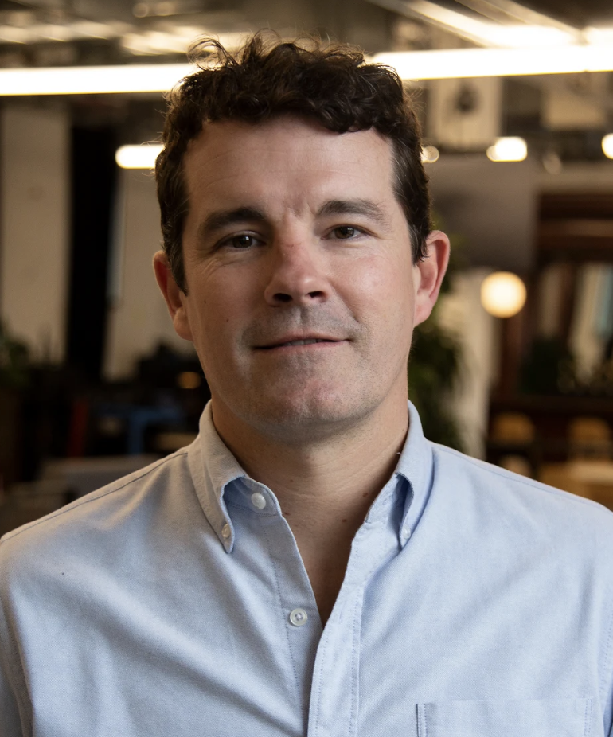
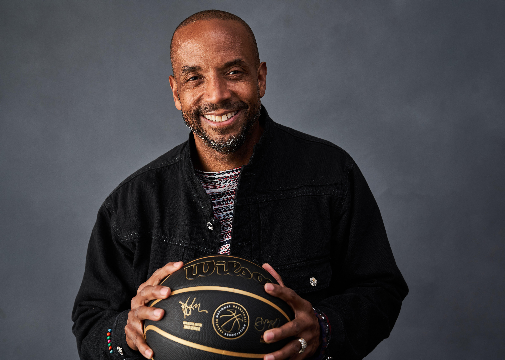
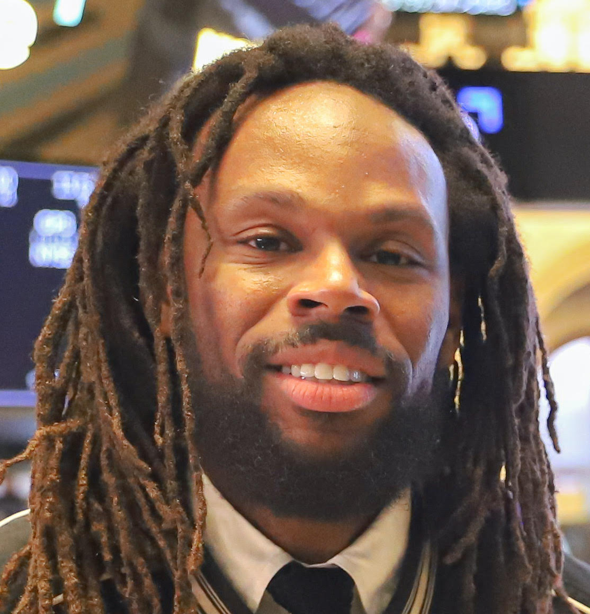
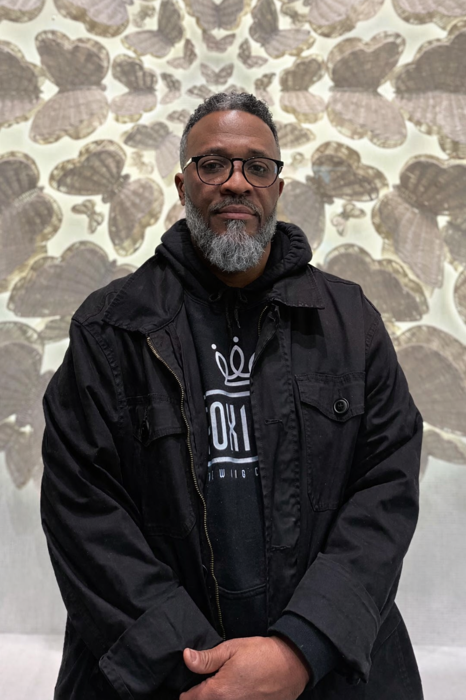

2026 Speakers
Meet the industry leaders, storytellers, and innovators joining us for the 6th Annual NYU Sports Film Festival — April 17–19 at the Cantor Film Center, New York City.
PlayersTV Pitch Contest
April 17 · NYU Production Lab
Jerome "Junkyard Dog" Williams
Former NBA Player, Television Producer & Coach
Jerome Williams is a Georgetown University graduate, renowned athlete, television producer, head coach and popular businessman with an impeccable reputation and mega heart. He is known for his professionalism and the willingness to readily give back to those less fortunate.

Bryan Terry
Head of Players Studio, PlayersTV
Bryan Terry is a veteran leader in the sports and entertainment media landscape, currently serving as the head of the Players Studio at PlayersTV. With a career defined by innovative storytelling, Bryan has a proven track record of developing high-impact show formats and digital series that bridge the gap between world-class athletes and their audiences. His extensive production background stems from tenures at industry powerhouses including MTV, truTV, and Vice.

Aron Phillips
Founder, How To Make It
Aron Phillips is a media and content executive operating at the intersection of sports, culture, and storytelling. He is the founder of How To Make It, a long-running platform focused on creative development and intellectual property. Phillips previously served as CEO of RTG Features — the film and television studio behind SLAM's expansion into long-form storytelling — and as COO of both RTG Features and SLAM. Before that, he was a Senior Director of Development at UNINTERRUPTED and a Creative Executive at SpringHill Entertainment, where his work includes producing the Sports Emmy–winning series Greatness Code.
Gersh U
April 18 · NYU Production Lab · Three industry panels presented by the Gersh Agency
Jayson Council
Head of Culture, Gersh Talent Agency · Panel Moderator
Jayson Council is a leading social impact innovator and the Head of Culture at Gersh Talent Agency, where he drives social innovation, purpose branding, and strategic partnerships. With over 20 years of cross-industry expertise, Jayson is a proud HBCU and Ivy League alumnus, a cross-industry consultant, and a skilled photographer focused on environmental portraits. He has dedicated his career to enhancing both private and public sectors through representation, respect, repair, and the transformative power of opportunity.

Que Gaskins
Chief Brand & Innovation Officer, NBPA · Game Time
Henry "Que" Gaskins is a branding and marketing visionary best known for helping Reebok transform itself from an athletic shoe company to a lifestyle brand by leading the RBK division and forging pioneering relationships with Allen Iverson, Jay-Z, 50 Cent, Pharrell, and Shakira. Currently Chief Brand & Innovation Officer for the NBPA, where he created the I.D.E.A. Lab focused on Innovation, Development, Engagement, and Access to culture. Prior to the NBPA, he was EVP of Brand Marketing & Strategy for Def Jam Recordings, and has held senior executive roles at Nike, American Eagle Outfitters, Reebok, and Dayton-Hudson.
Ionie Banner
Grants & Data Analyst · The Power of Intersectionality
Ionie is a Grants and Data Analyst working at the intersection of equity, data, and sports. Her work spans grants management, philanthropic strategy, and data infrastructure — driven by the belief that rigorous analysis and intentional strategy are essential to community-centered impact.

Caleb Miner
Marketing Strategist · The Power of Intersectionality
Caleb Miner is a marketing strategist working at the intersection of culture, sports, style, and community. He has led campaigns and activations for Gap, Chase, PUMA, and NASCAR, and collaborated with NBA icons Chris Paul, Dwyane Wade, and Carmelo Anthony, as well as platinum-selling artist A$AP Ferg. He specializes in turning cultural insight into partnerships and experiences that live beyond a single moment.

Jared Thompson
Vice President, Alternative Programming, Gersh · Real Talk with Gersh Sports & Film
Jared Thompson is a Vice President in the Alternative Programming department at Gersh, focusing on packaging and staffing unscripted programming and representing talent across broadcast, cable, and streaming networks. An early adopter of emerging media, he has sourced digital, podcast, and brand-funded opportunities for clients including premier production companies, industry-leading showrunners, and high-profile digital creators. Originally from Denver, Jared attended Arizona State University and relocated to New York City in 2022.
Julia Benavides
Digital Agent, Gersh · Real Talk with Gersh Sports & Film
Julia Benavides is a Digital Agent at Gersh representing a diverse roster of digital-first creators and public figures, including astronaut Kellie Gerardi, philanthropist Jesús Morales, and relationship expert Tiff Baira. She works with talent across lifestyle, comedy, beauty, and wellness. Julia joined Gersh in January 2024 following the acquisition of A3 Artists Agency, and previously worked at NBCUniversal across marketing, insights, and late-night programming.
Deirunas Visockas
Executive Vice President, Gersh Sports · Real Talk with Gersh Sports & Film
Deirunas Visockas is the Executive Vice President of Gersh Sports, leading U.S. basketball operations and representing clients across the NBA, international leagues, and the NIL landscape. A certified NBPA and FIBA agent, he has extensive experience navigating the NBA salary cap with a track record of representing players in each of the last four NBA drafts. Originally from Lithuania, he played collegiate basketball at Lafayette College and Boston College, where he later earned his MBA.
Schuyler Roos
Talent Coordinator, Gersh · Real Talk with Gersh Sports & Film
Schuyler Roos is a Talent Coordinator at Gersh, passionate about finding opportunities for athletes to integrate across other forms of entertainment. Schuyler is based in New York.

DJ Nate Da Barber
Official DJ, Gersh U
DJ Nate Da Barber is a New York–based DJ and cultural curator bringing the energy between panels at Gersh U. Known for blending sports, culture, and music into unforgettable live experiences, Nate sets the tone for the day's conversations.